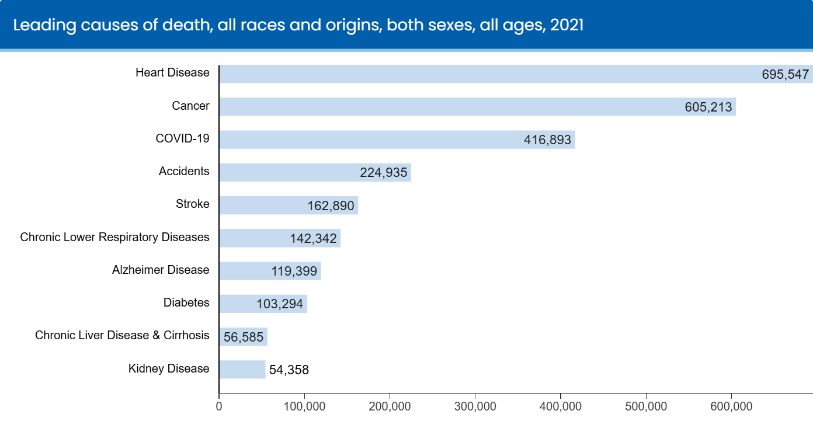

What is NYC open data?
NYC Open Data is a free online platform that provides public access to a collection of datasets generated by New York City agencies and other City organizations. It was made in hopes to provide transparency and accountability in the government, Which is why the data is in the public and useable and updated regularly.
why this topic?
I choose this topic because I thought it was interesting and that I believe that people should know about what causes the most deaths in New York and be able to resolve the issue to save lives.
Leading Causes of Death in the USA
First let's look at the leading cause of death in the United States Which is heart disease by 695,547 and second to that is cancer by 605,213.
what is heart disease?
According to the Mayo Clinic Heart disease is a common heart condition that affects the major blood vessels that supply the heart. A buildup of fats, cholesterol and other substances in and on the artery walls usually causes this . This buildup is called plaque. The buildup of plaque in the arteries reduces blood flow to the heart and other parts of the body. Which can lead to a heart attack, chest pain or a stroke.

what is cancer?
Mayo Clinic cancer is a large number of diseases. But it’s main traits is the development of abnormal cells that divide uncontrollably and have the ability to infiltrate and destroy normal body tissue. Cancer often has the ability to spread throughout your body which is why it’s so deadly.

What is the leading cause of death fof NYC?
NY leading causes of death is heart disease acording to the CDC